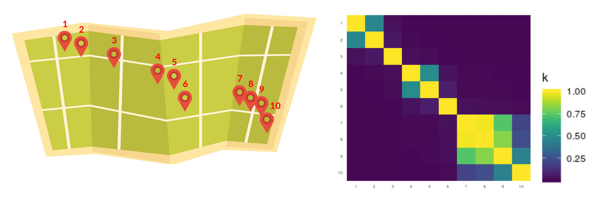
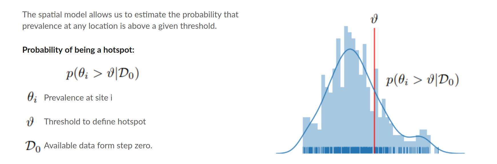
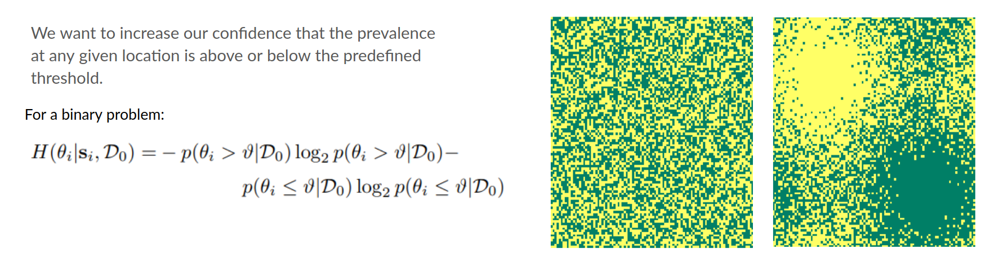
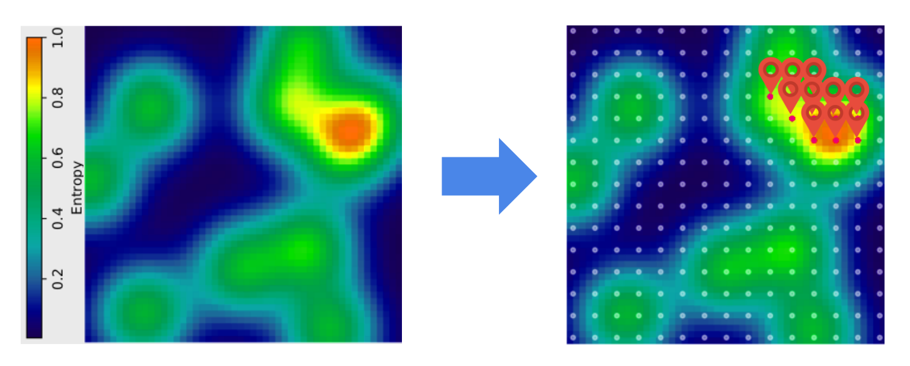
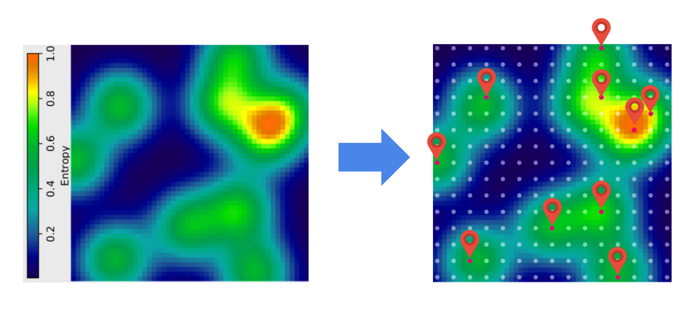

Adaptive Survey Design
November 5, 2021
This is a project I worked on when I was doing research at The Institute for Global Health Sciences at the University of California San Francisco. The results of this work was published last year in Scientific Reports. I won't go through all the details in the paper here, I will simply highlight the main ideas of the methodology. The objective of the project was to Develop a cost-effective sampling scheme to allow for targeted interventions.
Why was this a topic worth researching?
Let's start with some context. At the moment of writing the trends of control and elimination of different Neglected Tropical Diseases (NTD) was very positive. Hence the prevalence had been showing a reduction over the last years. The challenge in this scenario is that a disease transmission declines, the disease 'retreats' to smaller and smaller areas and, it becomes needed to use coarser scales to track it and respond to it. Bear in mind that prevalence is usually measured by using Cross Sectional Surveys, which are representative at administrative units (eg. Counties, Districts, Subdistricts, etc.).
The areas that require a response are generally referred to as hotspots. This are locations where the prevalence of the disease of interest is above some specific threshold
.Sampling Scheme Proposed
The sampling scheme proposed consists in the following steps:- We start with some data available. For example from a cross sectional survey.
- We use this data to estimate the prevalence in an area of interest.
- Based on the prevalence estimates, we then identify which sites are hotspots.
- Given the distribution of hotspots we now decide which places should be visited and sampled next.
- Finally, we collect data from the sites visited and return to Step 1.
Step 1 - Estimate Prevalence
The first step consisted of a Spatial Regression. A quick introduction to the topic is given in this post). For the moment it suffices to say that with this type of regression model we are able to characterize how prevalence varies due to factors like elevation, temperature, distance to water bodies, and also due to the distance between sites. I want to make emphasis in the spatial component since it helps the following steps to become more intuitive. As an example say that we have 10 different sites as shown in the map below. With this model we learn a covariance matrix (see heatmap) where the covariance is higher the closer the sites, and decreases in the more distant they are.
Step 2 - Identify Hotspots
This step consists in identifying which sites are hotspots. Remember that the threshold for determining a hotspot is a value already given. Our spatial model allows not only to estimate the prevalence, but also to estimate the probability of being above or below the threshold. We can use this to predict in which places (even the ones where we have not collected data yet) are hotspots.
Step 3 - Decide Where to Survey Next
Now we move to a more interesting step. How to decide which sites to sample next? We want to find hotspots. If our model is certain that a site is a hotspot, then there is no need to include it in the survey since we already found it. If our model is certain that a site is not a hotspot, there is also no need to survey that site, since most likely we won't find a hotspot there. The sites that need to be checked are those where we are most uncertain about.
Shannon's Entropy
Shannon’s Entropy provides us the mathematical framework for understanding uncertainty. It’s bounded between 0 and 1. 1 Being most uncertain. For example, in a Bernoulli variable with p = 0.5 (the most uncertain case) the entropy is 1.
To give some intuition think of the images below. Each image contains pixels that can be either green or yellow. On the image at the left there is no pattern for green or yellow. In contrast the image at the right has a cluster of yellow pixels in the upper left quadrant and a cluster of green pixels in the bottom right quadrant. Because of this pattern, we know that the probability of a pixel being yellow or green in this quadrants is not completely uncertain. Hence, entropy is lower in the pixels of the image at the right than in the pixels of the image at the left.
So we have a model that gives us prevalence estimates and the probability of each site being a hotspot. With this we can compute the uncertainty (entropy) associated to each site of interest. There is still a problem though. A survey design includes more than one site at the same time (otherwise it's not a very efficient mechanism). If we optimize for uncertainty only, we may end up making a bad distribution of resources. For example, say that the image on the left is a map of uncertainty (not prevalence). Then the area we are most unsure about containing hotspots is the orange bubble. For simplicity, now imagine that the sites we can visit are distributed in a regular grid and that we have a budget to visit 10 sites. A strategy could be to pick all the sites in the orange and yellow areas. But this is not a good strategy. We are not taking advantage of the spatial correlation (remember the covariance matrix above). Once we survey a site, we not only get information about it. Our uncertainty about it’s neighbors also decreases.
Joint Differential Entropy
To handle the shared information provided by neighboring sites, we can use a concept called Join Differential Entropy. It tells us the average amount of information contained in a batch of sites. Then our selections of sites to include in the survey could be based not only on the amount of uncertainty in each site, but also on the amount of information contained in the batch.
Once we define an adequate trade-off between these two components, the selection of sites in our example looks as in the image below.
Step 4 - Collect Data
The last step is to carry on the survey, add the new data collected to the historic database and go back to Step 1.Conclusion
There are more details in the paper, including a set of experimental results. Here I will only mention that our results suggested that with this Adaptive Design the number of sites surveyed can be reduced considerably (more than half) and we still achieve similar results than when using a Random Design.